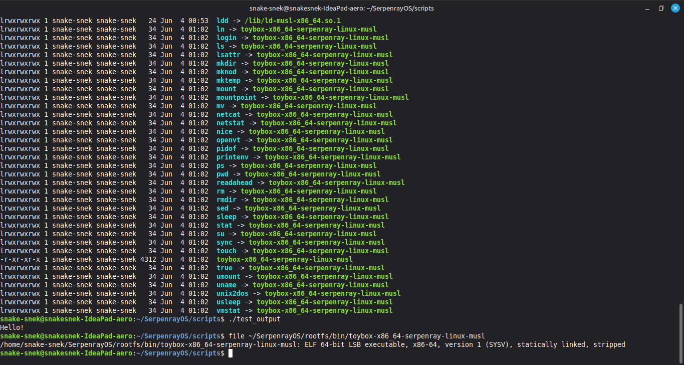

SerpenrayOS: Stage 1 Complete
Post #2 | 2026
I have officially completed the first stage of the SerpenrayOS bootstrap. The goal was to break free from the host system’s dependencies and establish a self-contained, independent toolchain.
After a deep dive into cross-compilation and manual linker configuration, I have successfully built a custom environment centered around clang and musl. The terminal output below proves that my test binary is correctly linked against a custom interpreter, confirming that the toolchain is fully decoupled from the host’s glibc.

With this foundation in place, I am moving on to Stage 2: building a fully isolated chroot environment. This will provide the necessary infrastructure to begin assembling core utilities and cleaning up the toolchain for Stage 3.
It has been an intensive process, but verifying that I can produce a functional binary for the x86_64-serpenray-linux-musl triplet is a significant step forward. This is a quiet update, but it marks a solid transition into actual system construction.